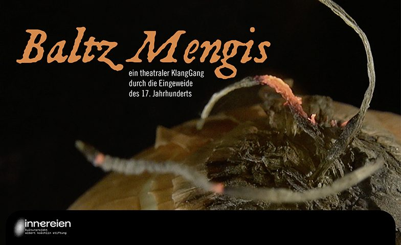
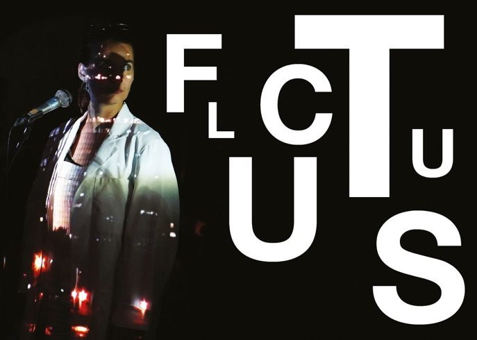
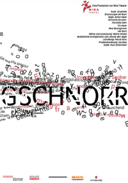
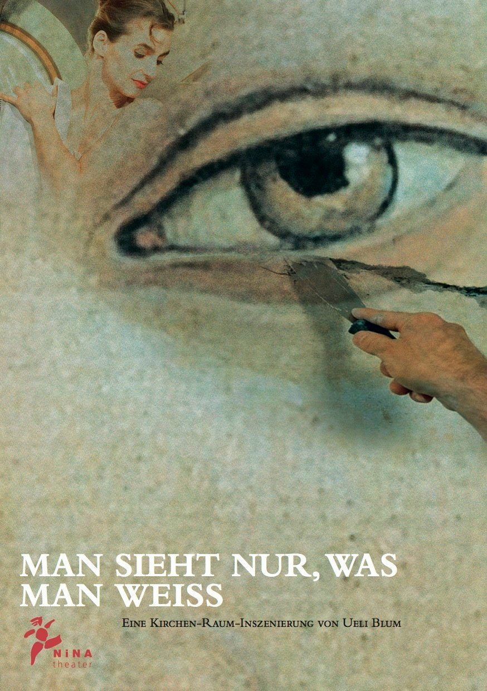
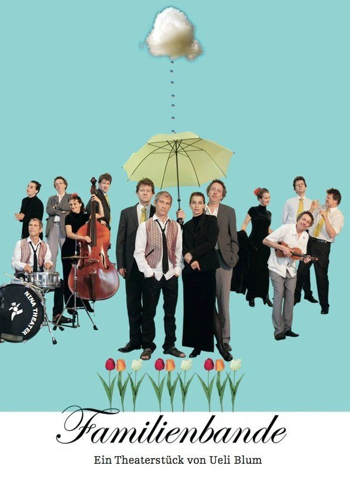
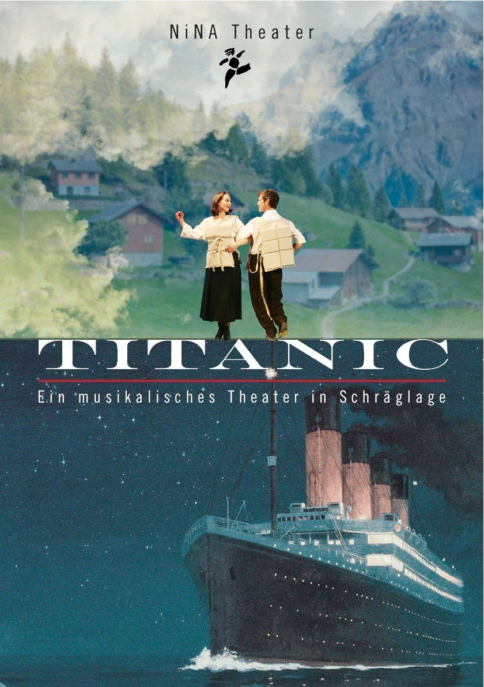
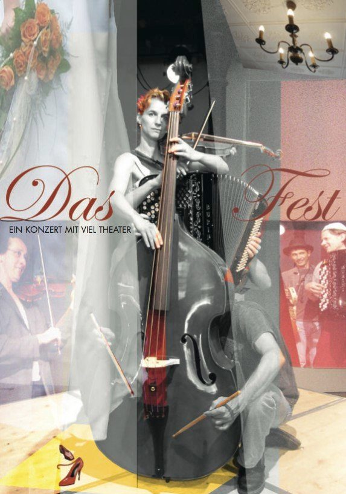

Stücke
Die Produktionen von N!NA Theater

AIRBNB (2020)
Ein Kammerspiel für ein Zimmer, zwölf Bilderrahmen und zwei SchauspielerInnen von Ueli Blum
«Airbnb» ist ein geballtes Stück Leben, das mit schnellen Dialogen, überraschenden Wendungen und viel Humor der heutigen Gesellschaft einen Spiegel vorhält und in gewohnter N!NA-Manier unterhaltsame neunzig Minuten verspricht. Seit Oktober 2020 auf Tournee.

Baltz Mengis (2022)
Ein theatraler KlangGang durch die Eingeweide des 17. Jahrhunderts
Dem Scharfrichter der Stadt Luzern wird das scharfe Beil aus der Hand genommen und unter die schwarze Kapuze geschaut: eine zeitlose Geschichte über Schuld, Sühne und den Tod.

Fluctus (2019)
Ein aus der Zeit gefallenes musikalisches Theaterprojekt in bewegten Bildern
Drei Musiker, drei SchauspielerInnen, eine Videokünstlerin und ein Autor setzen sich mit dem Phänomen Zeit auseinander. Tauchen Sie ein in eine Welt der sprechenden Bomben, entdecken Sie die magischen Klänge der Eigernordwand, streifen Sie mit dem Kanu durch die Nebenflüsse des Amazonas, verpassen Sie den Vollmond, der nur alle dreissig Jahre durch das Martinsloch scheint und bleiben Sie sitzen, auch wenn es Polizeistunde geschlagen hat.

Gschnorr (2016)
Die Hörshow von N!NA Theater
Bei «Gschnorr» steht die Sprache selbst im Rampenlicht einer Hör-Show. Die vier N!NA-Theater-Akteure lassen sie in allen erdenklichen Formen witzig und virtuos durch sich hindurchfliessen: Da kommt das Wort mal magisch, mal modisch, manchmal medial verfremdet, aber immer melodisch daher.

Man sieht nur, was man weiss (2013)
Eine Kirchenraum-Inszenierung
Ein Restauratoren-Team an der Arbeit. Ist das barocke Marienbild, das plötzlich auftaucht, echt? Ist es gefälscht? Während sie hinter den Schleier aus Staub und Patina dringen, tauchen die Geister der Vergangenheit auf, so auch der lebensfreudige Barockmaler Josef Ignaz Weiss… Ein spannendes Wechselspiel der Perspektiven über Glaube und Liebe mit stimmungsvoller Musik und poetischen Bildern.

Familienbande (2011)
Vier Geschwister, vier Temperamente, vier Perspektiven, vier Tonarten, vier Welten. Als unverhofft ihr Vater stirbt, müssen sie sich zusammenraufen, die Beerdigung ausrichten, das Erbe teilen, eine Lösung für Mutter finden – und dabei wird sie doch fast vergessen… Situationskomisch, musikalisch und mit dem Charme der tapfer Gescheiterten!

Titanic (2009)
Theater in Schräglage
«Titanic» begibt sich auf die Spuren von Josef und Josefine Arnold aus der Innerschweiz. Die beiden jungen Menschen liessen alles hinter sich und machten sich auf den Weg in eine neue Welt und unbekannte Zukunft. Dabei erfahren sie: Das Leben ist ein Wagnis, das Undenkbare möglich.

Das Fest (2007)
Ein Konzert mit viel Theater
Vier Musiker spielen an Geburtstagen und Hochzeiten zum Tanz auf. Mit ihren Klängen rühren sie die Herzen, wecken Erinnerungen und erhitzen die Gemüter. Sie selbst bleiben im Hintergrund. Doch heute ist das anders: Heute ist ihr Fest. Ein Fest der Sinne!
Der Home Delivery Service
Ein Anruf genügt und Geschichten werden Ihnen direkt ins Haus geliefert. Laden Sie Ihre Freunde oder Nachbarn zu einer ganz persönlichen Lesung bei sich zu Hause ein.
Weitere Stücke
Glittering (2008) – Das kleine Barocktheater zum Thema Littering
In meiner Posaune muss ein Sandkorn sein (2005) – Eine literarische Begegnung mit Erich Mühsam
Der König kocht (2004) – Das Stück über kleine und grosse Könige
Howie the Rookie (2002) – Eine Geschichte zwischen Gewaltbereitschaft und Verletzlichkeit
Eier und Eltern (2001) – Eine poetische Liebesgeschichte
Lillys Reise ans Ende der Welt (2000) – Das Theaterstück für die ganz Kleinen